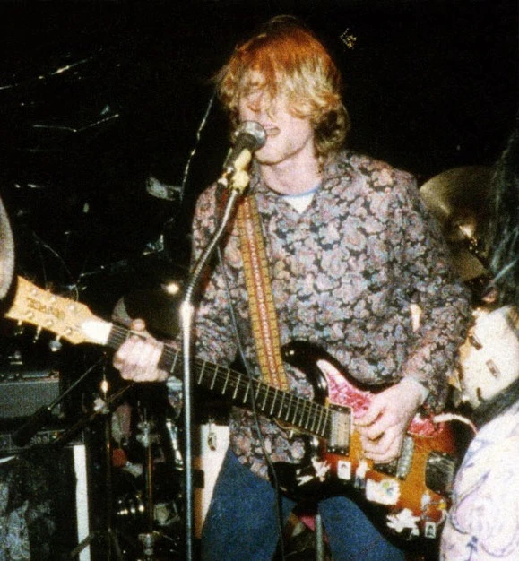

/* Style for all paragraphs */
p {
color: #1c0e06;
font-size: 16px;
font-family: 'Times New Roman', serif;
}
:
About The Company UNIVOX
Univox was a musical instrument
brand of Unicord
from the early 1960s,when they purchased
the Amplifier Corporation
of America of Westbury,
New York, and began to market a line
of guitar amplifiers.
Univox also distributed guitars by Matsumoku,
effects units by Shin-Ei Companion,
and synthesizers by Crumar and Korg.
The History .
In 1964, Unicord
(a manufacturer of electric
transformers acquired
by Gulf and Western Industries in 1959)
purchased the Amplifier Corporation
of America and began marketing a
line of amplifiers under the name of Univox.
Univox-branded fretted instruments
(electric and acoustic guitars and electric basses)
began being imported from Japanese contract manufacturer
Matsumoku in 1968, In 1978 Unicord phased out the Univox line
of guitars and equipment.
They switched to an original guitar line called "Westbury"
, and an amp line called Stage which lasted until about 1982.
The Unicord Corporation was purchased by Korg in 1985,
effectively ending the line.Univox was best known for its
copies of instruments from better-known
companies such as Fender,
Gibson, Rickenbacker, Ampeg/Dan Armstrong, Epiphone and others.
The Univox Hi-Flier was based loosely on the distinctive Mosrite
"reverse swept" shape;
it was popularized in the early 1990s
by Kurt Cobain, almost two decades after original
production had ceased.
:

When did UNIVOX become popular
Univox became popular in the late 1960s and throughout the 1970s as an affordable brand for entry-level
guitars and effects, especially known for their "copy era" instruments like the Hi-Flier,
which gained massive renewed popularity
in the 1990s when Kurt Cobain used them,
cementing their iconic status.
The biggest boost in popularity came in the 1990s when Nirvana's Kurt Cobain famously played Univox Hi-Flier guitars,
making them highly sought-after and increasing
their value in the vintage market.
Why is The univox guiatrs so popular?
Univox guitars, especially the Hi-Flier,
are popular for their unique, edgy rock/punk sound, distinctive Mosrite-inspired looks,
lightweight feel, and iconic association with Kurt Cobain, offering a cool vintage
vibe at a more affordable price point than other '60s/70s Japanese copies.
Their lightweight basswood bodies,
punchy "Phase Four" pickups, and slim necks made them favored by
alternative musicians for their raw, aggressive tones, bridging
the gap between vintage cool and modern playability.

 the Amplifier Corporation
of America of Westbury,
New York, and began to market a line
of guitar amplifiers.
Univox also distributed guitars by Matsumoku,
effects units by Shin-Ei Companion,
and synthesizers by Crumar and Korg.
the Amplifier Corporation
of America of Westbury,
New York, and began to market a line
of guitar amplifiers.
Univox also distributed guitars by Matsumoku,
effects units by Shin-Ei Companion,
and synthesizers by Crumar and Korg.